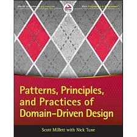
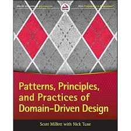
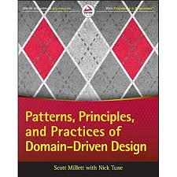

Books
 

Summary
- The web/UI, is just a delivery mechanisme (PIPE).
- Database is just a detail.
- The framework is not the heart of your application.
- Software engineering is about handling trade-offs.
Using some GOOD practices like:
Layered architecture
Framework intervention area
Business logic is that portion of an enterprise system which determines how data is: Transformed and/or calculated.
For example, business logic determines how a tax total is calculated from invoice line items.
Routed to people or software systems, aka workflow.
Source: http://wiki.c2.com/?BusinessLogicDefinition
$ composer init
$ Package name (<vendor>/<name>) [cherif_b/todo]: cherif/todo
Keep press enter for the rest
{
"name": "cherif/todo",
"authors": [
{
"name": "Cherif BOUCHELAGHEM",
"email": "cherif.bouchelaghem@gmail.com"
}
],
"require": {},
"autoload": {
"psr-4": {
"Todo\\": "src/Todo"
}
}
}
To autoload classes in the namespace, run:
$ composer dumpautoload
Idealy, it depends on the programming language only, sometimes, some implementations needs external libraries in order to not invent the wheel.
Value Objects: is not just a thing in your domain, it measures, quantifies, or describes something. They can be seen as small, simple objects such as money or a date range - whose equality is not based on identity, but instead on the content held, value objects are immutable.
Entities: Encapsulates business rules, The comparison between objects based on their identity, entities are stateful.
Repositories: Object with collection like behavior to abstract away the persistence mechanism, repositories act as storage locations, where a retrieved object is returned in the exact same state it was persisted in - making them very easy to reason about.
Domain services: Stateless objects, if a domain behavior/feature don't belong to an entity or a value object it could be a domain service.
A note on decoupling the database
Auto-increment entity IDs means there's a tight coupling with the persistence system.
In short auto-increment IDs is a NO NO.
use UUID if there's no codification rule.
Are the middleware between the outside world and the domain logic.
The purpose of such a mechanism is to transform data from the outside world into meaningful domain instructions.
Depends on the domain layer, persistence layer and/or infrastructure layer
Bind/glue services and repositories with the help of Dependency injection container.
In MVC structured application the Controller interacts with Application Services only.
It receives the data in the desired format.
For complicated data structure it can get the help from view-models or/and presenters.
Where the ORM specific metadata should be, like doctrine mapping files.
Implements Repository interfaces, for PDO, doctrine, Capsule ... etc
Hold components responsible for technical stuff, hashing password, notifications, emailing ... etc
Implements needed domain services which translate coming data to domain objects.
